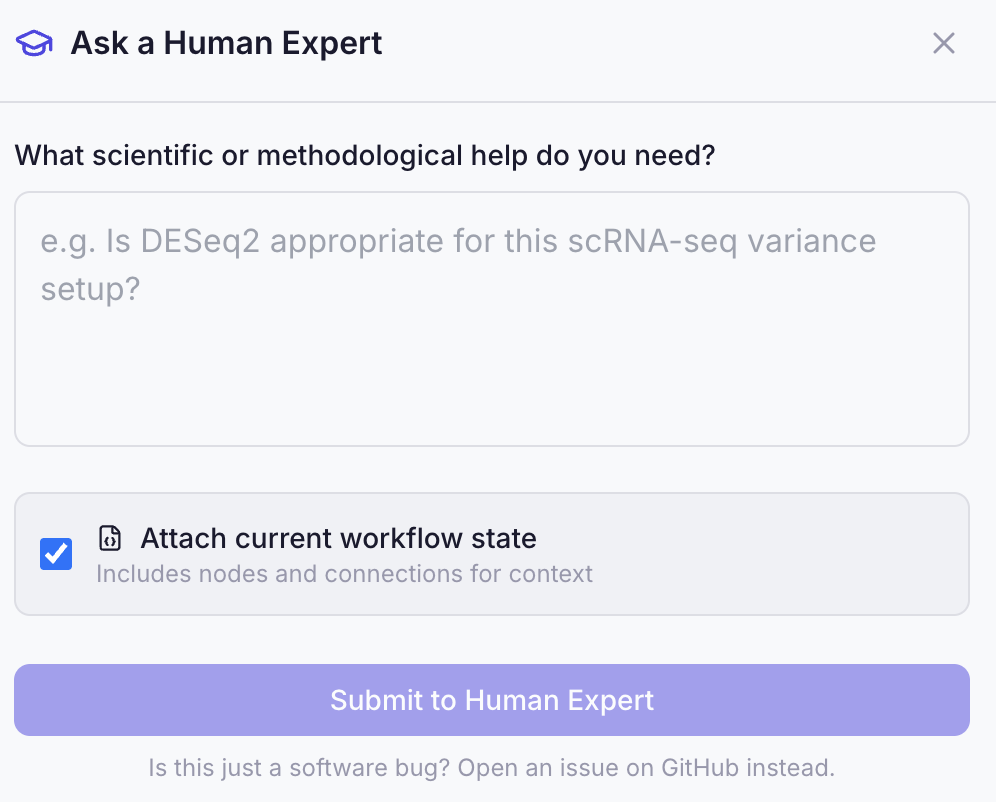

Chat View
The Chat View is your conversational interface with the rolv AI agent. Send messages, attach files, and watch the agent analyze data, write code, and produce results.
Sending Messages
- Type your message in the input box at the bottom
- Press Enter to send, Shift+Enter for a new line
- The AI agent will respond with a combination of reasoning, code, and results
- Hover a message you sent to copy or edit it. Saving resends from that turn; later turns are dropped
Attachments
Click the 📎 paperclip, paste, or drag-and-drop:
- Images (PNG, JPG, SVG) — charts, plots, screenshots
- Tables and data (CSV, TSV, Parquet, RDS, Excel, …) — the full file is saved in the session folder so later code can read it. Chat only sends a short preview to the model
- Scripts and documents (R, Python, PDF, Markdown, …)
Attached files appear above the input. Hover to remove them.
How Chat Picks a Path
Chat starts in execute (it does not jump into planning from words like “pipeline”). For an analysis request it searches the recipe library first and keeps only recipes that actually fit the task. It may stop with Use Recipe. It only enters planning when you ask for a canvas workflow from scratch.
Confirming a question
When chat asks whether to proceed (load a recipe, replace the main file, edit a protected node), the next short reply is read by the app:
- yes / ok / y / run it / run the recipe — do that saved action
- no / cancel — don’t do it
- Anything else — treated as a new request; the old question is dropped
You can also pick a recipe by name (“run Universal EDA for tables”) or position (“do 2”).
Use Recipe vs saying “run it”
These are different on purpose:
| You do this | What happens |
|---|---|
| Click Use Recipe on a card, or Run Recipe in the library | Starts a new graph session with that recipe |
| Type the recipe name, “run it”, or “yes” in this chat | Loads the recipe into the current session |
A Cloud Library hit that is not on disk yet is downloaded first in both cases.
Auto-Run
The Auto-Run toggle in the chat header controls whether the agent automatically executes generated code:
- On (default) — Rolv executes code and continues the agent loop
- Off — Turning off asks for confirmation. Rolv only suggests code; the loop pauses after suggesting a code block (search and list tools can still continue). Run suggested code yourself if you want.
This setting is saved per-session.
Stopping the Agent
While the agent is working, the send button becomes a red Stop square. That cancels the current chat run.
Scientific Critic & Output Auditing
When producing complex analyses, figures, or statistical tables, the agent can invoke an isolated Scientific Critic sub-agent. The critic audits generated plots and data files for:
- Legibility and proper axis scaling.
- Statistical plausibility and biological consistency.
- Accurate root-cause attribution (distinguishing between plotting code glitches vs. upstream data anomalies like empty joins or missing columns).
Research & Direct Citations
When answering questions using scientific papers, trials, or public data (via PubMed, ClinicalTrials.gov, GEO, patents, or web search), Rolv formats citations as direct clickable links to the original sources, so you can inspect the study, trial record, or dataset immediately.
Agent Activity
As the agent works, an Agent activity panel lists durable steps (search, file listing, code, results) instead of a blank “Thinking…” placeholder. If the model writes a short preamble before tools, that text is shown as the activity label.
| Step Type | What it means |
|---|---|
| 💭 Activity / preamble | What the agent is doing, or a short reasoning line |
| 💻 Code | Python, R, or Bash the agent wrote |
| 📋 Code Result | Output (stdout, stderr, exit code) from executed code |
| ⚠️ Warning | Important notices or potential issues |
| 📋 Plan Confirmation | The agent proposes a plan for your approval |
Session Header
The header bar shows:
- Session title — Click to rename. New sessions get a short auto-title after the first real message (trivial openers like
hiwait for a real reply) - 📁 Working Directory — Empty until a disk tool needs a folder; then click to choose or change. The folder picker opens at the current session folder when one is set. Click the external link icon to open in Finder
- Auto-Run toggle — Enable/disable automatic code execution (confirm when turning off)
- Step into Graph → — When this chat has no graph yet, review which scripts to keep (or open an empty canvas). If a graph already exists, the button only switches view.
Chat and Graph
A session can have both a conversation and a canvas. Switch with the header buttons:
- Step into Graph → — Opens Graph View. If this chat has no graph yet and scripts have already been run, Rolv stays in the chat and shows a review card proposing a workflow:
- Approve & Build Workflow: Automatically adapts your working scripts into standalone canvas nodes, connecting file inputs and outputs into a visual DAG.
- Request Changes: Type your adjustments directly in chat to refine the steps or script selection.
- Empty graph: Opens a blank canvas if you prefer to build from scratch.
- If the chat has no scripts, Rolv builds a pipeline from the conversation. If a graph already exists, the button simply switches view to the canvas. Asking in chat to convert your analysis into a workflow displays this same review card.
- ← Back to Chat — In Graph View, returns to the conversation. Hidden on graph-only sessions that never had chat.
Rolv remembers Chat vs Graph per session. Leave in Chat, click another session, come back — you land in Chat again.
The original chat stays writable after a graph exists — you can keep sending messages there.
When a graph already exists
Chat can bind files, run the workflow, inspect nodes, and add steps without rebuilding:
- A second attached table (merge / also-this) becomes another Data Input variable (for example
METADATA_FILE). It does not replaceINPUT_FILE. - Chat can inspect files or prototype a short script, then put the working code on the canvas as a node.
- Autonomous failure recovery — If a step fails during a chat workflow run, the agent diagnoses the error logs, fixes script code or input parameters, and automatically reruns the step within a bounded retry budget before concluding with a final summary.
- After a graph run, chat inspects outputs and writes findings (including plots). The skip/ran log stays in the activity panel.
Ask a Human Expert

Click the 🎓 graduation cap button to submit a question to a human expert. You can optionally attach your conversation as context. This is an experimental service we are testing, delays could occur.
Usage Limits
If you exceed your daily or monthly token quota, a modal will appear showing your usage. You can configure a custom LLM in Settings (OpenAI, Groq, Ollama, or OpenRouter presets) to bypass rolv's quotas.
Next: Graph View →